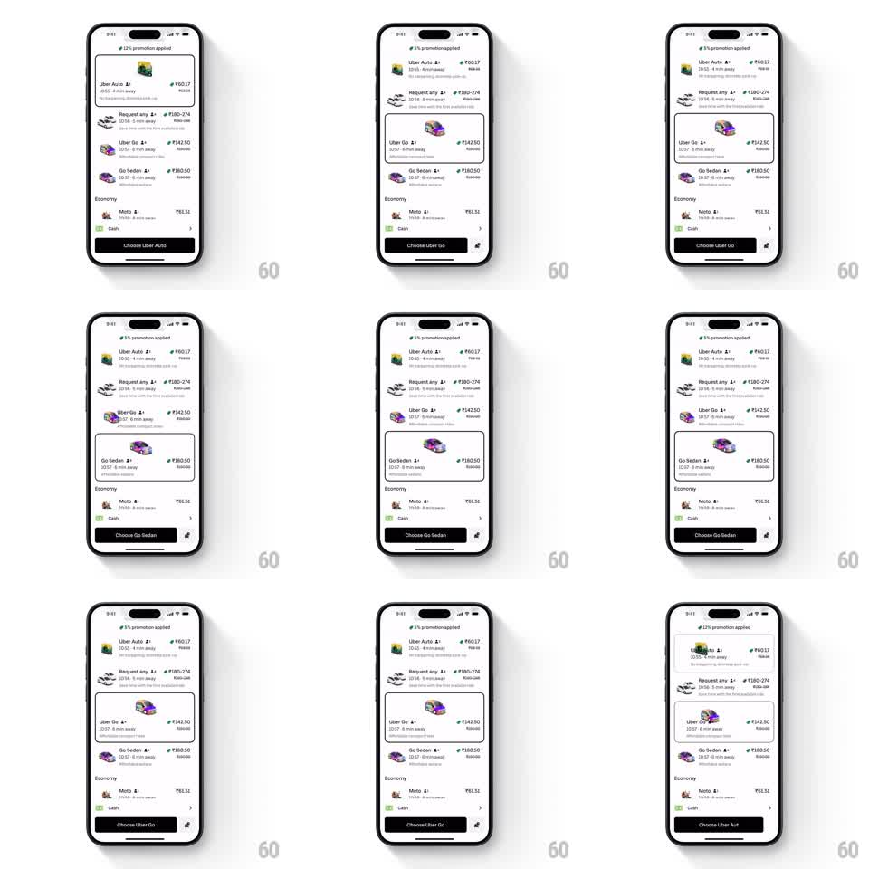

Media
Frame-by-frame

Rebuild this interaction 1:1: Uber's ride picker - tapping a ride row morphs it into an expanded card whose 3D vehicle illustration springs up in size, while the bottom button retitles to match.

Rebuild this interaction 1:1: Uber's ride picker - tapping a ride row morphs it into an expanded card whose 3D vehicle illustration springs up in size, while the bottom button retitles to match. ## Integration Integration: stack-agnostic spec - springs given as stiffness/damping, timed motions as duration + curve; map every value to your framework and animation library of choice. ## Scene The ride list under a "5% promotion applied" banner: Uber Auto (₹60.17), Request any (₹180-274), Uber Go (₹142.50), Go Sedan (₹180.50), an Economy section with Moto (₹63.32), and a Cash payment row. Each row: vehicle illustration, name, ETA, price, strike-through fare. The expanded card adds a larger illustration and a one-line description. Bottom button: "Choose <ride name>". ## Motion spec Pattern: tap-to-expand row morph with a spring-scaled vehicle illustration. - Tapping a collapsed row expands it in place (height spring ~320/26): the vehicle illustration grows from row-thumbnail to hero size (scale ~2.2x, spring ~280/16 with a soft overshoot) and the description line fades in (200ms, 80ms delay). - The previously expanded card collapses in the same beat (spring ~320/30), its illustration shrinking back. - Rows below slide to make room; the list's scroll position adjusts so the expanded card stays in view (spring ~320/30). - The bottom button's label crossfades to the new ride name (200ms) - "Choose Uber Auto" -> "Choose Uber Go" -> "Choose Go Sedan". ## Calibration - The illustration's scale-up is the star: it must overshoot slightly and settle, like the vehicle pops forward. - Expansion never changes the row's width or horizontal layout - only height and illustration scale. ## Reduced motion Cards expand without illustration overshoot (200ms crossfade for the description). ## Don't miss - The strike-through original fare stays visible in the expanded state. - The button label always names the currently expanded ride, even mid-animation.